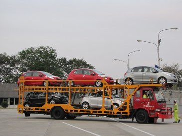
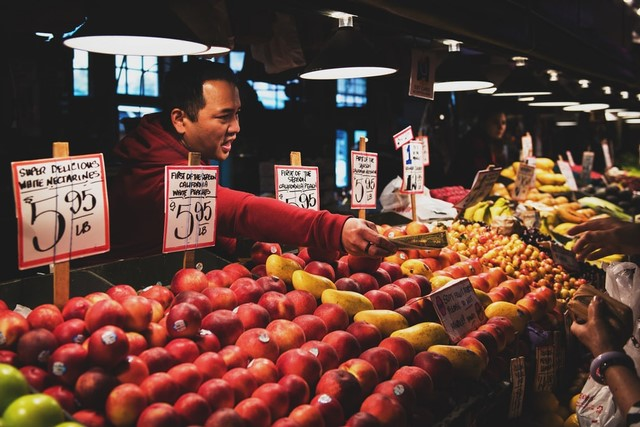

Kegiatan distribusi adalah kegiatan untuk menyalurkan barang/jasa dari produsen kepada konsumen.
Lembaga atau perorangan yang melakukan distribusi disebut distributor.
Tujuan distribusi antara lain sebagai berikut.
- Menyalurkan barang dari produsen kapada konsumen.
- Agar hasil produksi lebih berguna bagi masyarakat.
- Kebutuhan masyarakat akan barang/jasa terpenuhi.
- Agar kontinuitas produksi terjamin.
Untuk mencapai tujuan distribusi ada beberapa cara yang dilakukan agar barang sampai kepada konsumen. Cara tersebut antara lain sebagai berikut :
- Distribusi langsung adalah distribusi barang/jasa tanpa melalui perantara sehingga penyaluran langsung dari produsen kepada konsumen.
- Distribusi semi langsung adalah sistem distribusi dari produsen kepada konsumen melalui pedagang perantara yang merupakan bagian dari produsen.
- Distribusi tidak langsung adalah sistem distribusi dari produsen kepada konsumen melalui agen, grosir, pedagang kecil yang bertindak sebagai pedagang perantara.
Agar tujuan distribusi dapat berjalan baik, dibutuhkan pihak-pihak yang dapat menjadi saluran distribusi, diantaranya:
-
Pedagang
- Yaitu seseorang atau lembaga yang membeli dan menjual barang kembali tampa mengubah bentuk dan tanggung jawab sendiri dengan tujuan untuk mendapat keuntungan
- Pedagang dibagi atas pedagang besar (grosir ) dan pedagang kecil (retailer)
-
Perantara khusus, terdiri atas
- Agen : lembaga atau seseorang yang melaksanakan perdagangan dengan menyediakan jasa-jasa atau fungsi khusus yang berhubungan dengan penjualan barang ataupun wakil dari produsen yang bertanggung jawab atas penjualan hasil produksinya
- Makelar : pedagang perantara yang bekerja atas nama orang yang menyuruhnya
- Komisioner : perantara dagang dalam pembelian maupun penjualan yang bekerja atas nama sendirili>
- Importir : organisasi atau individu perantara dagang yang mendatangkan barang dari luar negeri
- Eksportir : perantara dagang baik individu atau organisasi yang melakukan kegiatan pengiriman barang ke negara lain yang membutuhkan.